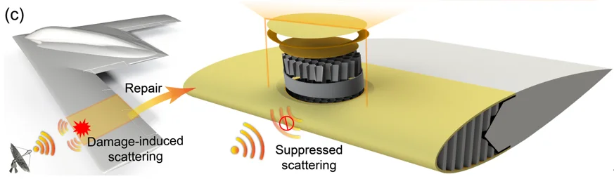

DAMAGE → NDI → REPAIR
Damage Detection and Repair Workflow
损伤检测与修复工作流
From damage visualization and nondestructive inspection to composite sandwich repair.
从损伤状态展示、无损检测到蜂窝夹层结构修复。
当前结构状态：完好 · Intact
01DAMAGE
损伤状态展示
蜂窝夹层结构的损伤背景
冲击和穿孔损伤可能同时影响吸波蜂窝夹层结构的结构完整性与功能性能。本模块首先展示损伤状态，为后续无损检测与修复流程提供背景。
完好 · Intact
拖动旋转 · 滚轮缩放
状态说明
上 / 下蒙皮
蜂窝芯
损伤区域
修补区
示意为局部剖切模型；仅表现构型与损伤状态，不含应力、损伤尺寸或力学计算。
02SENSE
无损检测 · 超声
超声无损检测 Ultrasonic NDT
超声无损检测利用弹性波响应识别蜂窝夹层结构内部异常。原始 A-scan 波形与 Hilbert 包络共同用于表征并辅助识别损伤。
Sense · 超声弹性波 / A-scan → 内部结构损伤与界面异常
扫描演示
演示数据
A-scan 与 Hilbert 包络
演示数据
横轴：时间 (µs) · 纵轴：幅值（归一化）
测点识别
当前测点
P1
Intact
识别基于包络特征（附加回波 / 底面回波衰减）的演示判据；仅支持单点 / 稀疏测点判断，未生成 C-scan。
03PROBE
无损检测 · 电磁
电磁无损检测 Electromagnetic NDT
电磁无损检测利用波导探头扫描结构局部表面响应。采集的 S 参数经过校准、近场重建和近远场变换后，可用于修复区域的电磁性能评价。
Probe · 电磁电磁波 / S 参数 → 局部电磁响应与修复区域电磁一致性
波导探头扫描
概念演示
S 参数采集
演示数据
横轴：频率 (GHz) · 纵轴：S11 (dB) · 单端口反射架构，仅 S11
近场到远场评价流程
近场响应重建（演示）
技术路线示意：网页不执行实时近远场数值计算。
04REPAIR
修复流程
蜂窝夹层结构挖补修复
修复流程通过局部材料去除、蜂窝芯更换、胶膜与修补层铺放，以及后续加压固化和修复后检查，恢复夹层结构的局部构型。
01 · 损伤评估与区域标记
挖补剖面示意

步骤
修复流程完成，结构进入「修复后」状态。